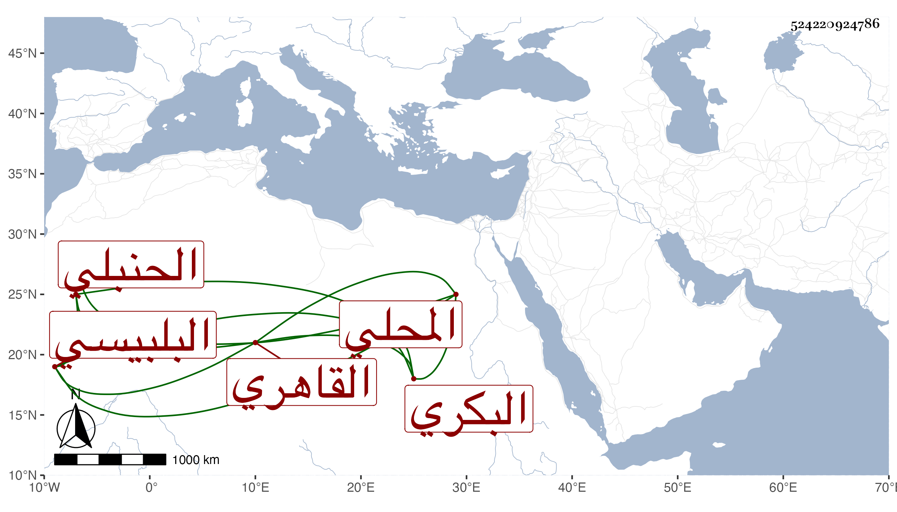

0902Sakhawi.DawLamic.ITO20230111-ara1.EIS1600.524220924786
Biography ID: 524220924786
699
عبد القادر بن أبي بكر بن علي بن أبي بكر وباقي نسبه في أخيه محمد الزين البكري البلبيسي الأصل المحلي القاهري الحنبلي والد سعد الدين محمد الآتي . ولد في سلخ ذي القعدة سنة ست وتسعين وسبعمائة واعتنى به أبوه فأحضره في الثانية على العراقي والهيثمي وابن أبي المجد والتنوخي ، وسمع بنفسه على الشرف بن الكويك ومحمد بن قاسم السيوطي وغيرهما كشيخنا ، واشتغل بالمباشرة فلما مات صهره زوج أخته ولي كتابة العليق عوضه فأقام فيها حتى مات عقب أخيه المشار إليه بيومين في حادي عشر شعبان سنة ست وأربعين بعد أن جدد المسجد الذي برأس حارة بهاء الدين وابتنى له دارا حسنة بجواره ورتب سبعا أول النهار وآخره بجامع الحاكم رأيته غير مرة رحمه الله وعفا عنه .
